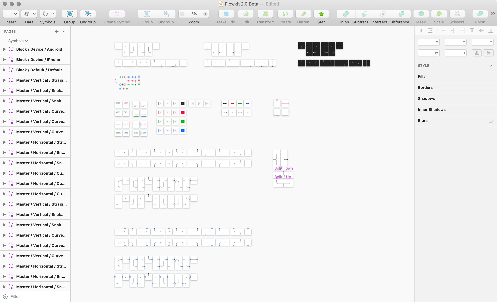

Legacy Usage
2.0 Installation
Flowkit 2.0 is available in both Sketch and Figma formats. Each format was created natively, leveraging unique features from each platform. Because of this, installing the library is quite simple and no additional software is required.
Installing in Figma
Figma requires users to have a paid Team account to create and access Figma Libraries. Therefore, to use Flowkit as a shared library between users and files, you and your team will need to have a paid Figma Team account.

- Open
flowkit-v2.figwith Figma. - Click the book icon in the top right to access
Libraries. - Navigate to the
Flowkit 2.0line item and clickPublish. - Create a Team project called Flowkit and click
Move. - Flowkit will now be available as a library across all Team projects.
- For more info on Figma libraries, read Figma's documentation.
- Please make sure you have the appropriate Flowkit Team license to share the library with your design team. Have a personal license and need to upgrade? Email
matt@mds.isand I'll hook you up with an upgrade coupon code.
Free Figma Accounts
If you have a free Figma account, it is recommended that you create userflows as additional pages inside of the Flowkit file in order to leverage the assets as components.
Installing in Sketch
Installing the Flowkit Library will make it available for use with all of your Sketch files.
- Open Sketch preferences, navigate to the
Librariestab. - Choose
Add Library...in the bottom left. - Select
flowkit-v2.sketchand clickOpen - Now you're ready to use Flowkit 2.0 in any Sketch 55+ document.
Sketch Runner + Flowkit
Using Flowkit with Sketch Runner is highly recommended. You can download the free Sketch Runner plugin, here. Sketch Runner will allow you to use keyboard commands to insert Flowkit library symbols onto your canvas. Use
⌘ "to open Sketch Runner, then type in the easy-to-remember™ Flowkit naming conventionType / Direction 1 / Modifier 1 / Direction 2 / Modifier 2to place the symbol you want.Download this free shortcut plugin to use Flowkit even faster.
Creating High-level Flows
Every main component inside of Flowkit is based on a 360x360 grid. Each one was designed to have 0px of margin on all sides when linking blocks and flows.

It is recommend to create one high-level flow focused on one particular section or feature of your project, per large artboard that can later be shared or exported.
High-level flows in Figma
- Press
⌥2or click the components icon in the lower left, to access Flowkit in the Components panel. - At the top of the Components panel, search for
block default, choose a block component and place it on the canvas. - Now search for
flow right, choose a flow component and place it on the canvas. - Continue adding components by searching and navigating the component list, as necessary.
High-level flows in Sketch
- Use
⌘ "to open Sketch Runner. - Type
block defaultand hitreturn. - Use
⌘ "again, and typeflow right straight. - Continue adding components with Sketch Runner, or by navigating the Flowkit symbol list from the Sketch app toolbar.
Screen to Screen Flows
Do not place the Flowkit components on top of artboards or frames and try to connect them to other artboards or frames. This will result in clipped components and unhappy Flowkit users. ☹️
Do place the Flowkit components on top of artboard instances on one giant artboard. This is the recommended screen flow technique when using Flowkit.
There are two distinct ways to create screen flows in both Figma and Sketch—dynamic screens and exported screens.
Screen flows in Figma
- Select a frame and press
⌘⌥Kto convert to a component - Copy and paste an instance of your frame component onto a larger frame to begin building your flow.
- With your first frame instance in place, navigate to the component panel with
⌥2and search fortap right. - Rinse and repeat as necessary.
- Any adjustments made to your master frames will be reflected in your flow frame automatically.
- Don't forget to reposition your flow components if you refactor your designs.
Dynamic Screens (recommended)
- This is a quick way to create a flow when dynamic screens don't matter.
- Right click any frame and choose
Copy as > Copy as PNG. - Paste the bitmap onto your large flow frame.
- Press
⌥2or click the components icon in the lower left, to access Flowkit in the Components panel. - Search for
tap right straightand place the flow component on your large flow frame. - Rinse and repeat as necessary.
Exported Screens (alternate)
Screen flows in Sketch
- Install either the free Angle or Magic Mirror plugin.
- Create a large artboard to contain your screen flows.
- Draw a rectangle the same size as the first artboard you'd like to use.
- Apply the Magic Mirror or Angle plugin to the rectangle, to mirror your artboard. Please refer to the plugin documentation for more details on this.
- Use Sketch Runner
⌘"and searchtap right straightto place your first flow symbol. - Rinse and repeat as necessary.
Dynamic Screens with Plugins
- Convert your artboards to symbols.
- Create a large artboard to contain your screen flows.
- Place the symbol instance of your artboard onto the large artboard.
- Use Sketch Runner
⌘"and searchtap right straightto place your first flow symbol. - Rinse and repeat as necessary.
Dynamic Screens with Symbols
- Select an artboard and choose
Make Exportablein the bottom right of the inspector panel - Use Sketch Runner
⌘"and searchtap right straightto place your first flow symbol. - Rinse and repeat as necessary.
Exported Static Screens
Overrides
Whether you're building complex flows or changing interactions on tap components, Flowkit comes with lots of prebuilt override capabilities.
Linking flow components
There are times when linking multiple flow components together is necessary to give you just the crazy line you want in your document. You can achieve the appearance of a continuous line by simply hiding the nested endcaps.
Figma
Sketch
Changing tap interactions
Screen flows can be created with tap, swipe, and long press.
Figma
Sketch
Still have questions?
I'd be happy to help you out! Tweet me or shoot an email to matt at mds dot is